| Item sold in the marketplace | 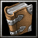 | 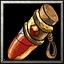 | 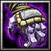 | 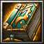 | 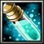 | 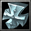 | 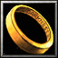 |
| Item effect | Increases your lives of 1 when you use it. | Remove cooldown of all your spells. | Steal a life to your opponent when you launch a spell to him. | Improves your hero's abilities. | Prevent units in the target area to cast spells. | Automatically brings the Hero back to life with 500 hit points when the Hero wearing the Ankh dies. | Activate Avatar to temporarily give the owner 5 bonus armor, 500 bonus hit points, 20 bonus damage and spell immunity. |
| Character | Grom Hellscream | Illidan Stormrage | Malganis | Golbut | Xerus | Popol | Arthas | Kael |
| How to unlock a character ? | Finish the History mode with Uther Lightbringer | Finish the History mode with Grom Hellscream | Finish the History mode with Illidan Stormrage | Finish the History mode with Malganis | Finish the History mode with Golbut | Finish the History mode with Xerus | Finish the History mode with Popol | Finish the History mode with Arthas |
| Mode | Massacre Circus | Massacre Circus Infinite |
| How to unlock a mode ? | Finish the History mode with Arthas | Finish the Massacre Circus mode |
| Character | 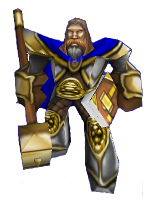 | 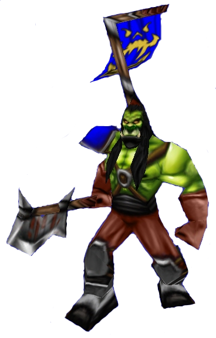 | 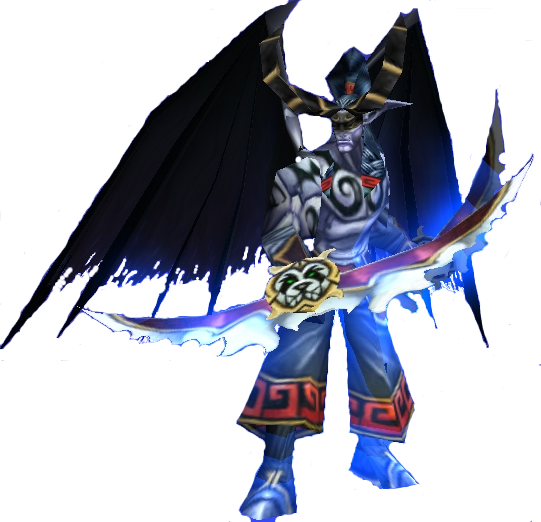 | 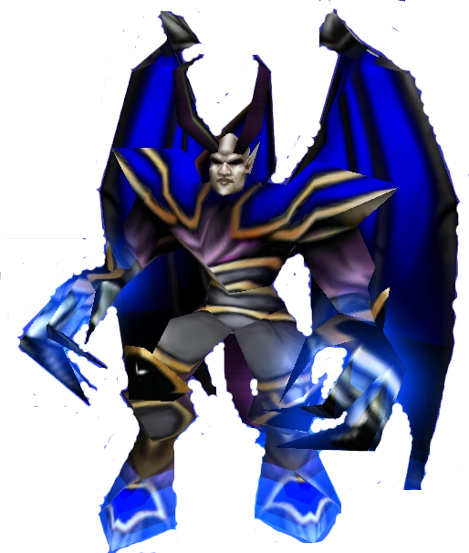 | 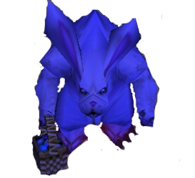 | 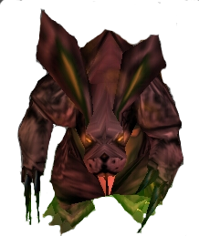 | 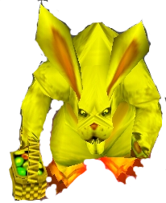 | 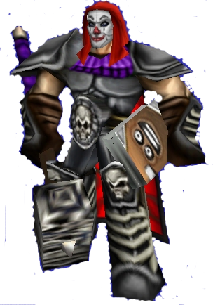 | 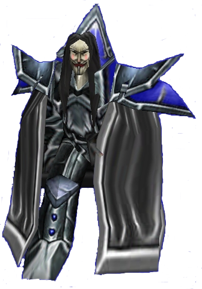 |
| Skin | Nazrook Geargrind | Frosty the Snowman | Forest Troll Voodoo Hunter | Gryphon Hero | Pandaren | Furbolg Tracker | Polar Furbolg Shaman | Darth Vader | Seth - God of Chaos |
| How to unlock a skin ? | Reach the round 100 or higher on the Massacre Circus Infinite mode with Uther Lightbringer | Reach the round 100 or higher on the Massacre Circus Infinite mode with Grom Hellscream | Reach the round 100 or higher on the Massacre Circus Infinite mode with Illidan Stormrage | Reach the round 100 or higher on the Massacre Circus Infinite mode with Malganis | Reach the round 100 or higher on the Massacre Circus Infinite mode with Golbut | Reach the round 100 or higher on the Massacre Circus Infinite mode with Xerus | Reach the round 100 or higher on the Massacre Circus Infinite mode with Popol | Reach the round 100 or higher on the Massacre Circus Infinite mode with Arthas | Reach the round 100 or higher on the Massacre Circus Infinite mode with Kael |
| Item | 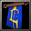 | 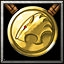 | 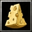 | |
| How to unlock an item? | Don't pick and use any item | Finish the History mode with a cheat code | Rescue the kid | Find all the hidden items |
| Models | Skins | Icons | Other |
|
|
|
|
Patch 1
Patch 2
Patch 3
Patch 4
Patch 5
Patch 6
Patch 7
Patch 8
Patch 9
|
Patch 11
Patch 12
Patch 13
Patch 14
Patch 15
|
Creation : Yan © 2013

{kind=link}
{kind=link}
{kind=link}
{kind=link}
{kind=link}
{kind=link}
{kind=link}
{kind=link}
{kind=link}